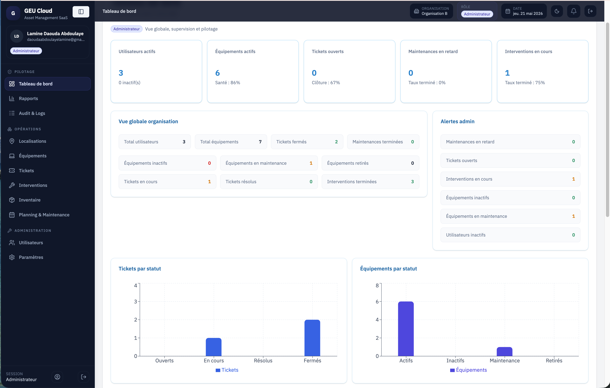
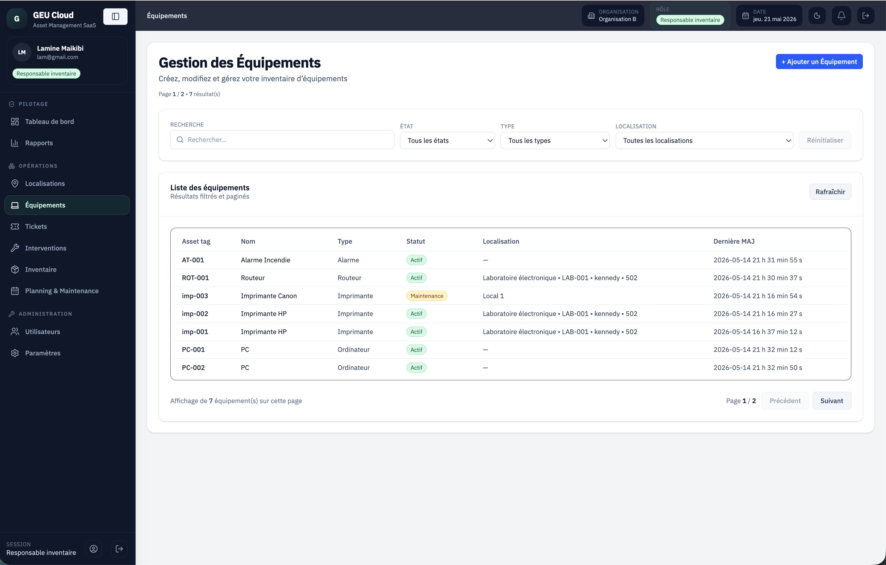
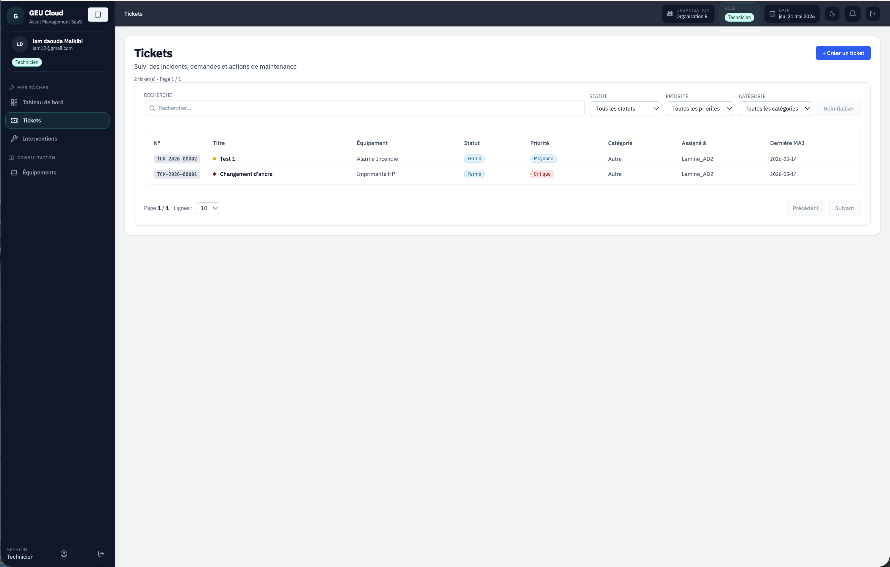
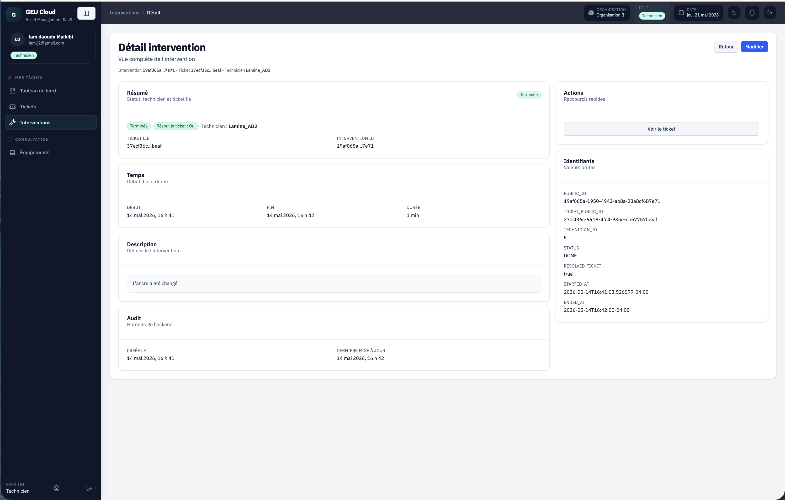
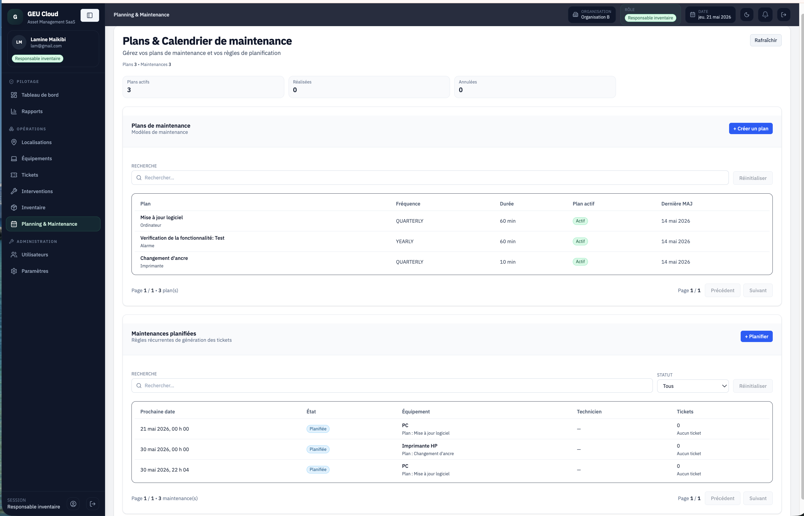
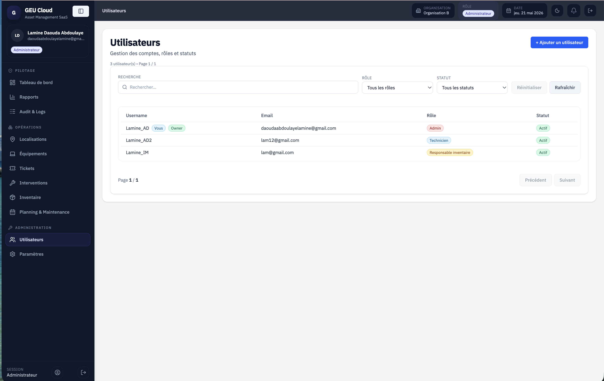
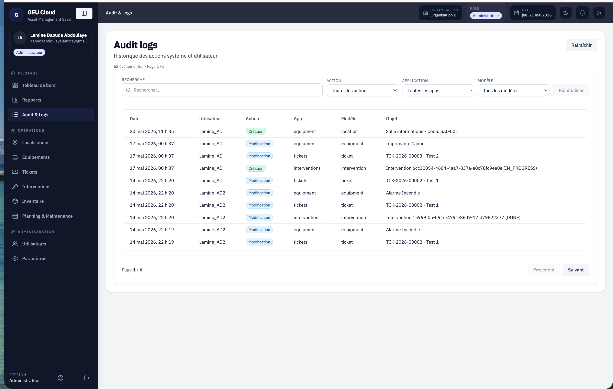

← Retour aux projets
Privé — Code source non public
Résumé
GEU Cloud est une application web métier complète construite avec Django REST Framework côté backend
et React/TypeScript côté frontend. Elle centralise la gestion du cycle de vie des équipements :
de l'inventaire initial jusqu'aux tickets de maintenance, en passant par la traçabilité QR Code et
les permissions granulaires par rôle. Le projet est en développement continu avec pour objectif une
commercialisation B2B.
Problème résolu
Les organisations gèrent encore leurs équipements via des tableurs dispersés : aucune traçabilité
des interventions, historique des pannes perdu, accès non contrôlé et données non centralisées.
GEU Cloud répond à ce problème avec une plateforme structurée autour des flux réels :
acquisition → inventaire → maintenance → historique → reporting.
Stack technique
Django REST Framework
React
TypeScript
PostgreSQL
API REST
JWT Auth
QR Code
Git
Fonctionnalités principales
📦
Inventaire équipements
Fiche complète par équipement — modèle, état, emplacement, historique
🎫
Tickets de maintenance
Création, assignation, suivi et clôture avec workflow d'état complet
🔍
Traçabilité QR Code
Scan QR pour accès instantané à la fiche équipement et son historique
👥
Rôles utilisateurs
Hiérarchie admin → technicien → lecteur avec permissions par ressource
📊
Tableaux de bord
Indicateurs de maintenance, équipements actifs, tickets ouverts
📍
Gestion emplacements
Organisation par sites et emplacements avec affectation des équipements
🔗
API REST documentée
Endpoints structurés pour intégrations tierces et accès mobile
📋
Historique complet
Journal horodaté de toutes les interventions par équipement
🔒
Permissions granulaires
Contrôle d'accès par rôle ET par ressource au niveau API
Architecture générale
React / TypeScript
Interface utilisateur — composants, état, formulaires, validation côté client
↕
API REST Django REST Framework
Endpoints, sérialisation, authentification JWT, permissions, logique métier
↕
PostgreSQL
Modèles relationnels — équipements, tickets, emplacements, utilisateurs, historique
Architecture découplée : le frontend React consomme l'API via des appels HTTP authentifiés par JWT.
Les permissions sont vérifiées côté backend à chaque requête. Déploiement prévu sur VPS avec Nginx en reverse proxy.
Ce que j'ai conçu et réalisé
Conception du schéma de base de données relationnel
Implémentation des endpoints REST (CRUD + logique métier)
Système de permissions granulaires par rôle et ressource
Architecture des composants React et gestion d'état
Intégration frontend ↔ API REST avec gestion d'erreurs
Workflow d'états des tickets (ouvert → en cours → clôturé)
Génération et validation des QR Codes par équipement
Sérialisation imbriquée sans N+1 queries (select_related)
Validation des données d'entrée côté API
Organisation modulaire du projet (apps Django découplées)
Défis techniques
- Concevoir un système de permissions couvrant à la fois les rôles hiérarchiques et les droits par ressource
- Synchroniser les états entre le frontend React et l'API sans sur-fetching
- Gérer les relations imbriquées Django (équipement → tickets → historique) de manière performante
- Structurer l'API pour être lisible par le frontend et extensible pour des intégrations tierces
- Maintenir la qualité des données avec validation à deux niveaux (formulaire client + API)
Aperçus de l'interface
GEU Cloud est un projet privé en développement. Pour protéger le code source et la propriété
intellectuelle, seules certaines captures de l'interface sont publiées.

Dashboard administrateur

Gestion des équipements

Tickets de maintenance

Suivi des interventions

Planning de maintenance

Gestion des utilisateurs

Journal d'audit administrateur